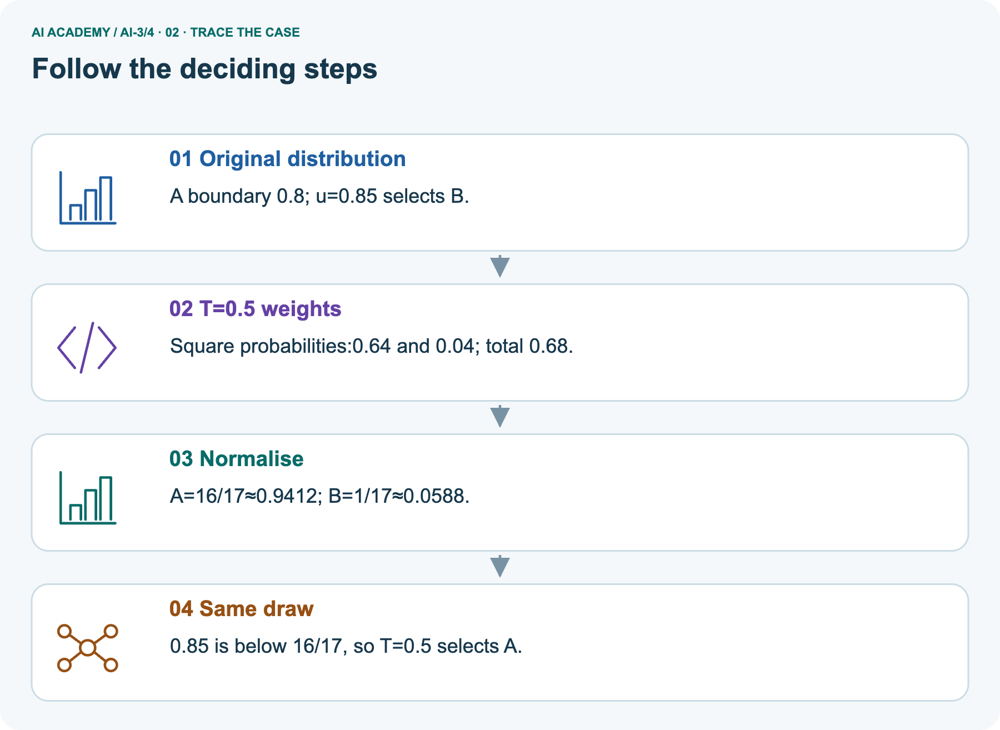
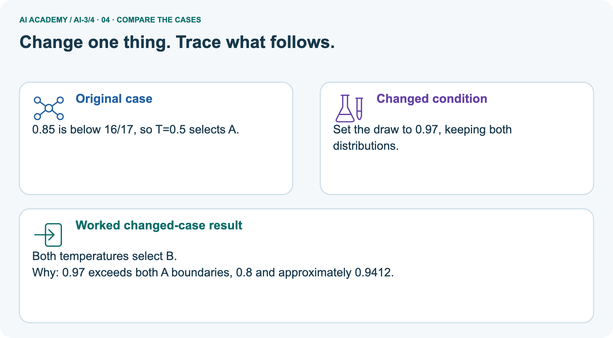
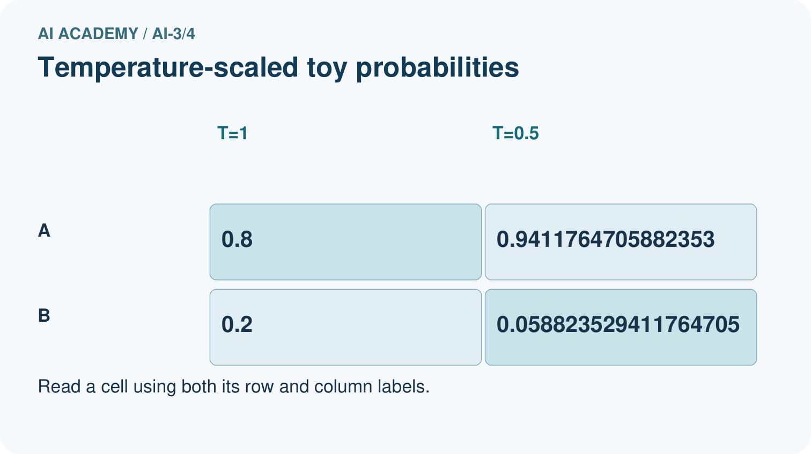
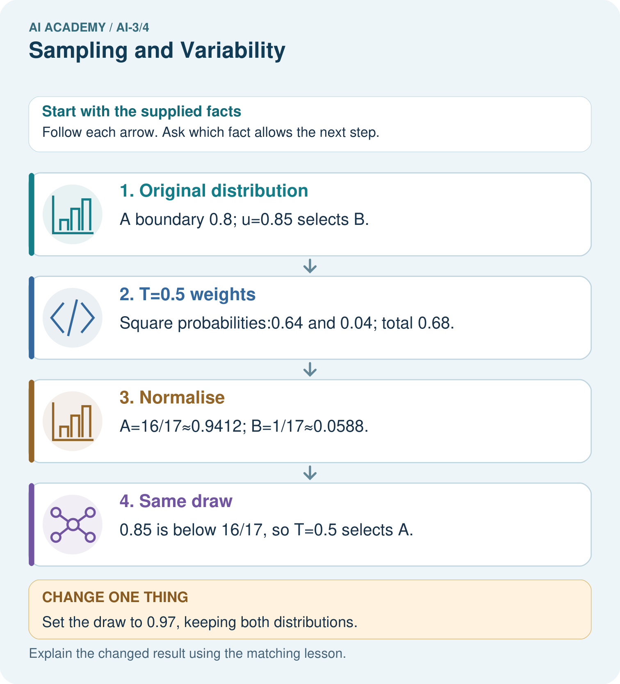
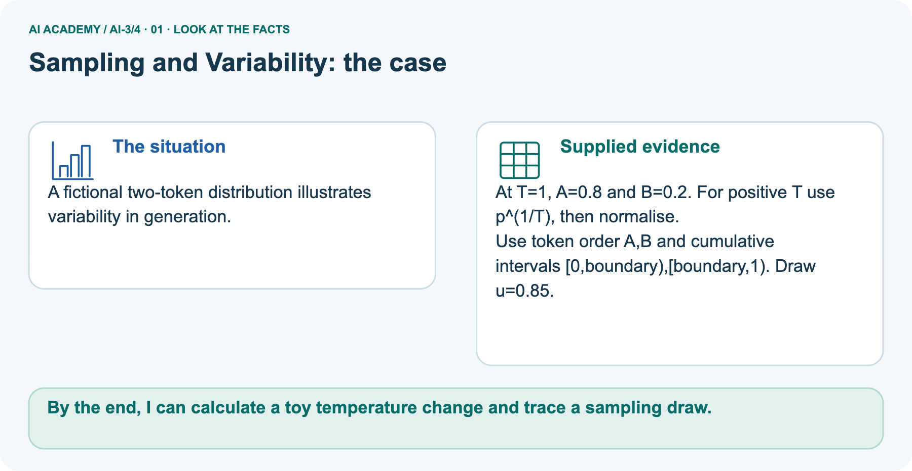
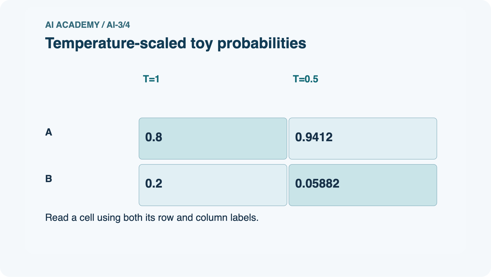
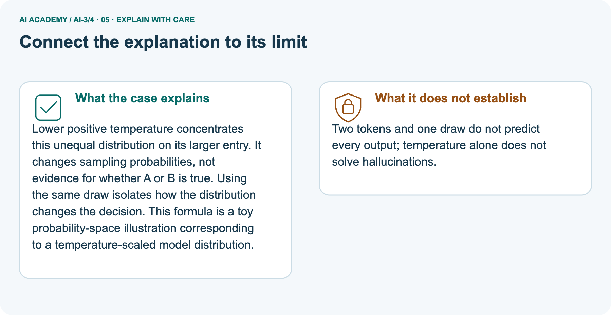
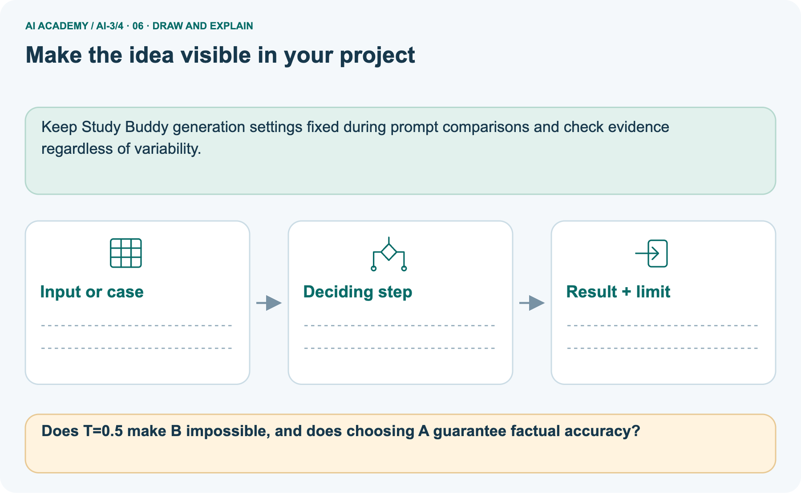

AI Academy · Level 3 · Grade 8 · Week 4 · Student lesson
Sampling and Variability
Learn to understand, design, build, test and explain AI systems responsibly.
Project: Verified Study Buddy
THE CONNECTED WEEK
Fix the draw. Transform the table. Check the interval.
Compare positive-temperature sampling without mistaking consistency for factual correctness.
Keep one habit: Interval contract → exact transformation → two-token picture → paired traces → independent table.
Main lesson · Section 1
How does the same draw change under a different distribution?
Trace sampling boundaries and positive temperature without claiming factual accuracy.
Your learning goals
I can sample from a distribution using explicit cumulative intervals.
I can calculate temperature-adjusted probabilities for a toy example.
I can explain why random variation and factual reliability need separate evaluation.
Recall greedy versus whole paths
Close your notes first. A rough first answer helps us choose the right starting point; it is not a score for your ability.
Does the largest next-token probability guarantee the largest complete-path probability?
Your end goal
By the end, I can calculate a toy temperature change and trace a sampling draw.
Attention extension · Permitted normalised weights
What must happen to permitted weights after excluding a position?
Earlier wording, alternatives and picture transcripts
Your learning target
Remember before reading
Without opening the old lesson, explain one key idea from Tokens and Context. Give an example and a mistake that the idea helps you avoid.
Without opening the old lesson, explain one key idea from Predictive and Generative AI. Give an example and a mistake that the idea helps you avoid.
After trying, check the relevant lesson or ask your teacher. Change the part of your explanation that the evidence shows was wrong.
Week 4: Sampling and Variability
Decoding choices trade consistency, diversity, and risk.

CREATOR MISSION
Compare low- and high-variability story continuations.
Creator name and date:
Readiness for the connected explanation
Readiness for A small attention calculation
This week’s end goal
Main lesson · Section 2
Define sampling intervals before selecting a token
The left endpoint belongs to the interval; the right endpoint does not.
The complete red/blue/green distribution and interval contract
Start with probabilities red 0.6, blue 0.3, green 0.1 in that fixed order. Greedy chooses red. Sampling uses a draw u with 0 <= u < 1 and cumulative intervals: red [0,0.6), blue [0.6,0.9), green [0.9,1).
Left endpoints are included, right endpoints excluded. Thus u=0.6 selects blue and u=0.9 selects green. The draw 1 is outside this contract.
Separate repeated frequencies from a single trace
Sampling does not mean choosing all tokens equally. Across many independent draws the frequencies may approach the specified probabilities, but a small sample need not match them exactly.
Fixed recorded draws allow a reproducible classroom trace. A random seed and generator version help replay a real sampling program, not establish the truth of outputs.
Attention extension · Scores, scale and stable softmax
For one query q and keys k_i of width d, compute score s_i = dot(q,k_i)/sqrt(d). Then obtain weights from softmax and combine value vectors. Dot products may be negative; probabilities cannot.
The softmax performs the conversion. This is a single-head classroom calculation, not a full language model.
Define softmax weights as exp(s_i-m)/sum_j exp(s_j-m), where m is the maximum permitted score.
Subtracting the same maximum from every permitted score leaves the ratios unchanged and avoids unnecessary overflow from large positive scores.
Natural exponent exp is introduced here; use a calculator or Python math.exp rather than estimating its meaning from the word exponential.
Earlier wording, alternatives and picture transcripts
PICTURE STORY
Notice → Predict → Explain
Begin with visible evidence. Do not explain more than the picture and information support.
MYSTERY
The learners must use sampling and variability to solve a problem. What information do they have? What decision or calculation do they make? What would count as evidence that it worked?
Three observations (what you can point to):
My prediction and the clue supporting it:
A closer explanation
Apply the connected idea: A small attention calculation
Main lesson · Section 3
Calculate the positive-temperature transformation
For this half-temperature example, square then normalise.
The stated formula and exact adjusted probabilities
For strictly positive probabilities p_i and temperature T>0, define q_i = p_i^(1/T) / sum_j p_j^(1/T). This classroom formula is equivalent to scaling logits before a softmax when p came from those logits.
We use it directly on the supplied table. At T=1 the distribution is unchanged. At T=0.5, square each probability: 0.36,0.09,0.01; total 0.46. The adjusted distribution is red 18/23, blue 9/46, green 1/46.
Compare the original and adjusted tables
| Token | T=1 probability | T=0.5 probability |
|---|---|---|
| red | 0.6 | 18/23 ≈ 0.782609 |
| blue | 0.3 | 9/46 ≈ 0.195652 |
| green | 0.1 | 1/46 ≈ 0.021739 |
Trace the same draw under both distributions
Keep the evidence roles separate
Explain the deciding evidence
Point to the input, the deciding step and the result in this week’s visual. Explain the same step in ordinary words. A picture helps when you can say what each part represents.
Attention extension · Query/key/value roles and exact ratio
| Item | Key, width 1 | Value, width 1 |
|---|---|---|
| A | [0] | [2] |
| B | [ln(3)] | [6] |
Take q=[1] and d=1. The scale sqrt(1) is 1, so scores are 0 and ln(3). ln(3) is the number whose natural exponential is 3, approximately 1.098612. Exponentials have ratio 1:3, hence weights 1/4 and 3/4.
Output is (1/4)*2 + (3/4)*6 = 5. Using maximum subtraction gives exponentials 1/3 and 1 and the same normalised weights.
Keep the evidence roles separate
Earlier wording, alternatives and picture transcripts
VISUAL MECHANISM
Input → Process → Output
Trace the information. At each stage, ask what changed and how you could test it.

↓

↓

Which stage could fail even when the other two are correct? Explain:
A closer explanation
Apply the connected idea: A small attention calculation
Connect the picture and the explanation
Main lesson · Section 4
Compare changed intervals with unchanged factual evidence
A more concentrated distribution is not a source of new truth.
Four pictures with a purpose

Normal case: predict the result and deciding evidence.

Boundary case: identify the exact limit.

Missing information: name what must be clarified.

Transfer case: explain which procedure still applies.
Choose a revealing case
Which case is most likely to reveal a hidden assumption? Why?
Predict the supplied changed case
Change: Set the draw to 0.97, keeping both distributions.
Check after predicting
Prediction: Both temperatures select B.
Reason: 0.97 exceeds both A boundaries, 0.8 and approximately 0.9412.
Earlier wording, alternatives and picture transcripts
CASE GALLERY
Four Tests, Four Kinds of Evidence
A system is not understood until it survives more than one comfortable example.
NORMAL CASE: predict and name evidence. BOUNDARY CASE: predict and name evidence.
MISSING INFORMATION: predict and name evidence. TRANSFER CASE: predict and name evidence.
Change one thing in the pictured case
Main lesson · Section 6
Explain the temperature limit, then a separate two-token picture
Keep the three-colour and A/B distributions distinct.
Compare positive temperatures without changing rank
The lower positive temperature concentrates this table on its largest entry. For T=2, use square roots before normalising; this flattens this unequal distribution.
These changes leave the order of positive probabilities unchanged, so greedy still selects red. They change the sampling distribution, not the factual evidence behind a generated claim.
Reject substituting zero into this formula
Our formula excludes T=0; dividing by zero is undefined. Some systems offer a zero-temperature setting as a separate greedy policy, but that is not a value to substitute into this formula.
We also avoid claiming that any one setting removes all nondeterminism in an unspecified system.
Read the separate two-token distribution and draw
A fictional two-token distribution illustrates variability in generation.
At T=1, A=0.8 and B=0.2. For positive T use p^(1/T), then normalise.
Use token order A,B and cumulative intervals [0,boundary),[boundary,1). Draw u=0.85.
Trace squared weights and exact intervals



Read the picture one step at a time
Lower positive temperature concentrates this unequal distribution on its larger entry. It changes sampling probabilities, not evidence for whether A or B is true.
Using the same draw isolates how the distribution changes the decision. This formula is a toy probability-space illustration corresponding to a temperature-scaled model distribution.
Predict the changed draw0.97
Change one thing: Set the draw to 0.97, keeping both distributions. Predict the result before checking the explanation. What remains the same?
Check after predicting



Explain remaining probability and truth limits
Two tokens and one draw do not predict every output; temperature alone does not solve hallucinations.
Read the labelled picture: Does T=0.5 make B impossible, and does choosing A guarantee factual accuracy?
Attention extension · Equal scores and masks
For q=[1,1], kA=[1,0] and kB=[0,1], both dot products are 1. Divide by sqrt(2); equal scores give equal weights 1/2 regardless of their common value. With values [2,0] and [0,4], the output is [1,2].
Do not omit the scale merely because it cancels in this tied example; unequal scores generally change concentration when scaled.
Apply masks before normalising over permitted scores. In the width-one example, excluding B leaves weight 1 for A and output 2. A key with the wrong width violates the dot-product contract.
Values must share a width with one another, but their width need not equal the query/key width. An all-excluded mask is handled explicitly instead of taking a maximum of an empty list.
Earlier wording, alternatives and picture transcripts
WORKED EVIDENCE
Reason Step by Step
Predict first. Then check each step. A correct answer without visible reasoning is incomplete evidence.

1. Low variability favors high-weight continuations repeatedly.
2. Higher variability gives lower-weight options more chances.
3. Diversity may help brainstorming but can increase off-task or unsupported detail.
4. Choose settings by task, then evaluate repeated runs—not one favorite output.
Recalculate, retrace, or restate the reasoning in your own representation:
CHECK Did the evidence answer the exact question? Did the total, path, or source record stay consistent?
A closer explanation
Apply the connected idea: A small attention calculation
Learn from the worked case
Cover the result before checking it. Say what is given, choose the procedure, and follow one step at a time. Then uncover the result and explain your first mismatch. Ask why a step is allowed, not only what number it produces.
A pictorial worked case: Sampling and Variability
The facts we will use






Why this result follows
What this example does not establish
Main lesson · Section 7
Separate consistency from correctness
Inspect factual support with its own reference rather than inferring it from concentration.
Repair the lower-temperature truth claim
Claim to repair: Lower temperature made red more likely, so red is more accurate. The operation transforms probabilities and sampling intervals. It does not supply evidence about the actual colour. A highly consistent wrong token remains wrong. In the two-token picture B retains probability1/17 at T=0.5; less likely is not impossible, and u=0.97 still selects B.
Design a revealing fixed-draw comparison
Earlier wording, alternatives and picture transcripts
ERROR DETECTIVE
Compare → Diagnose → Repair
Do not patch the answer. Find the earliest unsupported assumption, wrong step, or weak evidence.

| Evidence record | Expected | Actual | Likely cause / next test |
|---|---|---|---|
| normal case | works | ||
| boundary case | stated rule | ||
| missing input | safe response | ||
| fresh transfer | generalizes |
Repair one cause. Why is this repair better than changing several things?
A closer explanation
A fair temperature comparison fixes the prefix, model distribution, candidate order and draw policy. Record multiple outcomes and evaluate task criteria separately.
If the aim is creativity in fiction, variation may be useful; if the aim is reporting a sensor state, every factual claim still needs evidence.
Never call a probability-concentration change an accuracy improvement without an appropriate evaluation.
Apply the connected idea: A small attention calculation
Check query/key dimensions, scale, permitted positions, finite scores, stable normalisation, weight sum and value widths in that order. A zero output can result from values cancelling; it does not imply zero attention weights.
Record enough intermediate values for someone else to reproduce the trace.
Main lesson · Section 8
Practise exact boundary draws with less help
Keep exact fractions when a draw lies near an endpoint.
Read and trace the three supplied draws
Supported draws 0.2,0.6,0.9 at T=1 select red, blue, green. At T=0.5, 0.2 and 0.6 fall below 18/23 and select red; 0.9 lies between 18/23 and 45/46 and selects blue.
Keep exact fractions for boundaries, because rounding can misclassify a draw near an endpoint.
Complete main temperature W2
Practise with less help: Compute the adjusted table
Use workbook W2 for the connected example “Sampling and temperature”. First fill the input and rule boxes. Try the middle steps before asking for a hint. After a hint, try the next step yourself.
| Plan | Do | Check |
|---|---|---|
| What is given? Which rule or procedure applies? | Record each intermediate step. | Does the result follow? What remains unknown? |
Repair sampling means equal chances
Use the worked case for Sampling and temperature. Proposed explanation: “Sampling means equal chances”. Decide whether this explanation is supported.
Point to the step or supplied fact that decides; explain your repair if needed.
Answer on your own before discussion. If you are unsure, say which step you need help with.
Check your reasoning
Explain the separate A/B picture
Does T=0.5 make B impossible, and does choosing A guarantee factual accuracy?
Explain the picture
Keep independent work separate
This is supported practice. Keep the separately named independent case for an attempt before feedback.
Attention extension · Stable common-shift calculation
Supported scores 1000 and 1000+ln(3) would overflow an ordinary direct exponential calculation in many floating-point implementations. Maximum subtraction gives -ln(3) and 0, producing weights 1/4 and 3/4.
Their common shift does not change the relative weights. This is a stability mechanism, not evidence about source correctness.
Use its named workbook W2. Identify the given inputs, try the middle steps with less help, then explain your trace. Check this claim before group discussion: Scores already are probabilities
Earlier wording, alternatives and picture transcripts
LOGIC STUDIO
Specify Before You Run
Prompts, schemas, retrieval, tool calls, and code are inspectable parts of one AI product.

SET task, audience, constraints, output_schema LOAD approved_context or retrieval_result CALL model or allowed_tool VALIDATE fields, claims, citations, and safety IF evidence missing: ask, retrieve, or abstain RETURN useful output + source trail + limitations
Trace one input. Which line changes the state or chooses a path?
A closer explanation
Apply the connected idea: A small attention calculation
Explain your trace to a partner. Your partner points to one step to check. Swap roles on the next case. Each person writes their own explanation.
Practise the connected topic: A small attention calculation
Main lesson · Section 9
Run a complete fixed-draw comparison
Hold prompt, candidates and draws fixed while changing the stated distribution transformation.
Predict the controlled setup
Complete controlled paper/local experiment: fixed prefix Next colour:, token order red/blue/green, original distribution0.6/0.3/0.1, draws0.1,0.4,0.7,0.85,0.97. Compare T=1 and the stated T=0.5 transformation using the same draws. Predict all outputs and category counts, then run the supplied program or make an explicitly labelled paper trace.
These are paired deterministic traces of recorded draws, not five new random trials or actual language-model stories.
Run the complete exact-arithmetic simulation
from fractions import Fraction as F
def half_temperature(p):
if not p or any(x<=0 for x in p) or sum(p)!=1:
raise ValueError('positive probabilities summing to one required')
weights = [x*x for x in p]
return [x/sum(weights) for x in weights]
def sample(p,u):
if not p or any(x<0 for x in p) or sum(p)!=1 or not 0<=u<1:
raise ValueError('invalid distribution or draw')
cumulative=F(0)
for index,probability in enumerate(p):
cumulative+=probability
if u<cumulative:
return index
raise AssertionError('complete exact distribution must select an interval')
labels=['red','blue','green']
p=[F(6,10),F(3,10),F(1,10)]
q=half_temperature(p)
print('T=0.5:',q)
for u in [F(2,10),F(6,10),F(9,10)]:
print(u,labels[sample(p,u)],labels[sample(q,u)])
draws=[F(1,10),F(4,10),F(7,10),F(85,100),F(97,100)]
for name,distribution in [('T=1',p),('T=0.5',q)]:
outputs=[labels[sample(distribution,u)] for u in draws]
print(name,outputs,{label:outputs.count(label) for label in labels})Compare consistency with separate supplied evidence
For a separate factual check, supplied fictional reference R says the current flag is blue. Score each generated colour label against that reference. Both five-draw traces have two blue outputs, even though the adjusted distribution produces red more often.
The experiment demonstrates changed sampling behavior and a distinction between consistency and reference agreement; it does not establish an optimal model setting, general factual accuracy or educational benefit. Keep the independent A/B/C table withheld.
Keep the investigation record
| Test / input | Prediction | Actual | Evidence / calculation | Change or keep? |
|---|---|---|---|---|
| normal | ||||
| boundary | ||||
| missing | ||||
| fresh transfer |
What did the hardest test teach you that the normal test did not?
Before trying: what do I expect, and why? While trying: which step could first go wrong? Afterwards: what did I actually observe, and what should change? Keep “not run” if you only traced the procedure.
Earlier wording, alternatives and picture transcripts
EVIDENCE LAB
Predict → Test → Record → Explain
Keep expected and actual results separate. Surprises are useful data when recorded honestly.

Use the supplied fixed prefix, three-colour table and five recorded draws with the complete local simulation. Compare output counts and agreement with fictional blue-flag reference R separately. These are toy paired traces, not actual prompt runs, stories or model-quality measurements.
Plan → try → check
Main lesson · Section 14
Try alone: transform the fresh A/B/C table
Trace both distributions before interpreting the result.
Independent table and scope
Probabilities A=0.5,B=0.3,C=0.2 in that order. Compute T=0.5 probabilities and cumulative boundaries. Trace u=0.5 and u=0.9 under T=1 and T=0.5. Explain the limit of the comparison.
Use exact fractions for squared weights and cumulative boundaries. Intervals are left-inclusive,right-exclusive in A,B,C order. Zero temperature is outside the stated formula. The task provides no factual reference for these labels, so explain the procedural comparison without calling either output true.
Your first attempt and help record
Attempt this case before feedback. Record any help. Earlier examples below are further practice; a case already practised with feedback cannot establish fresh transfer.
Your teacher has the independent answer and scoring criteria. Complete the matching workbook week to keep your practice evidence together.
Use feedback afterwards
Attempt the independent case before hints. Record whether you worked alone, used a hint or followed a model. After feedback, fix the first unsupported step and explain why it changed.
A later check uses a changed case, not a copied answer.
Earlier wording, alternatives and picture transcripts
Independent case: Sample a new table independently
Week 4 Independent application
Close the worked explanation. Apply the idea to this different question without copying.
Prompt A is run three times and returns three different stories. Does this alone prove the prompt changed? Describe a fair comparison of two prompts.
My answer, with a trace, calculation or supporting evidence
Create and test
Change one relevant detail. Predict the result before testing. Include a boundary or missing-information case when it helps reveal a limit.
My changed input and expected result
Connect to your project
Use low variability for structured study answers and allow more diversity only for labeled brainstorming.
The evidence I will keep
Transfer practice from the original programme
Prompt A gives three identical wrong answers. Prompt B gives two correct answers and one wrong answer. Compare consistency and correctness without declaring either generally superior.
Use feedback to improve
Main lesson · Section 11
Treat a generation setting as a policy to evaluate
Keep the source checks regardless of observed variability.
This week’s concrete contribution
For the Verified Study Buddy, record generation settings and keep unrelated settings fixed during a comparison. Evaluate supported facts, response format and task usefulness separately from output similarity. A lower-variability policy may be a hypothesis for a structured task, but the project must test its own criteria; temperature alone does not verify factual claims.
The classroom simulation supplies no recommendation about a deployed service’s best settings.
Keep Study Buddy generation settings fixed during prompt comparisons and check evidence regardless of variability.
Keep the checkpoint and human choice
THIS WEEK’S CHECKPOINT Use low variability for structured study answers and allow more diversity only for labeled brainstorming.
SYSTEM MAP Learner need → prompt/schema → approved sources/retrieval → model/tool → structured answer → verification → human decision
What will you add, change, or verify in the project this week?
What should remain under human control?
RESPONSIBLE DESIGN Collect only necessary information. Show uncertainty and limits. Never confuse fluent output with verified truth.
Earlier wording, alternatives and picture transcripts
CUMULATIVE PROJECT
Verified Study Buddy
Every week adds one inspectable piece. The system must show how it reached a result.

Evidence for your project
Main lesson · Section 16
Finish: explain the interval, transformation and truth boundary
A fixed-draw trace makes the numerical decision reproducible.
Explain without notes
Close your notes. Explain this goal in your own words: Sample from a distribution using explicit cumulative intervals
Plan a changed-case return
If you are unsure, return to the worked picture and explain one arrow. If you are ready, change an input or assumption and justify your prediction.
Save your workbook evidence. At the next review, try a different case before opening your old answer.
Reference bank and extra practice
Choose the reference that helps your next step.
Reference · Words for the main lesson and extension
Reference · Section 5
Reference · Words for the main lesson and extension
Use each word with a concrete record or calculation.
Core words
| Word | My own example | Not this / boundary |
|---|---|---|
| decoding | Selecting output tokens from a model's scores using a specified procedure. | |
| variability | Differences observed across repeated runs, samples or conditions. | |
| temperature intuition | A rough understanding of how temperature rescales token scores: higher values commonly spread choices more, without guaranteeing creativity or truth. | |
| seeded test | A test containing a deliberately planted, known condition or error to check whether it is handled. |
Main explanation terms
| Word | Meaning |
|---|---|
| Sampling | Selecting an alternative using a specified random procedure |
| Greedy choice | Selecting an alternative with largest next-token probability under a tie rule |
| Temperature | A positive parameter that changes the concentration of a distribution under a stated transformation |
| Cumulative interval | A range of draws assigned to an alternative using accumulated probability mass |
Extension terms
| Term | Meaning |
|---|---|
| Scaled dot product | A query-key dot product divided by the square root of key width |
| Softmax | Exponentiating scores and normalising their sum to obtain weights |
| Score | An unnormalised compatibility value before softmax |
| Numerical stability | An implementation choice that avoids avoidable arithmetic overflow or loss |
Earlier wording, alternatives and picture transcripts
VOCABULARY LAB
Words You Can Use to Reason
A definition matters when you can recognize the idea, use it, and contrast it with a near-miss.


Words used in the closer explanation
Terms for A small attention calculation
Extra challenge · Choose a stronger explanation
Reference · Section 10
Extra challenge · Choose a stronger explanation
Choose the next useful challenge rather than repeating the ladder.
Thinking ladder
1 • NAME: Define the concept without repeating the textbook.
2 • TRACE: Show the information, state, branch, calculation, or evidence path.
3 • APPLY: Solve a different example independently.
4 • CHALLENGE: Find a boundary case, counterexample, or unfair outcome.
5 • EXPLAIN LIMITS: Say when the result should not be trusted or used alone.
My strongest evidence of independent understanding:
Earlier wording, alternatives and picture transcripts
MASTERY
From Knowing the Word to Owning the Idea
Move upward only when you can produce evidence without copying the worked example.

Reference · Check your explanation
Reference · Section 12
Reference · Check your explanation
Use after practice; Sample a new table independently is the selected independent task.
Evidence and limits
1. My fresh example, trace, calculation, or design:
2. My evidence that it works (include a boundary or missing-data case):
3. One limitation, fairness concern, or situation needing human review:
Self-check
SELF-CHECK □ I explained the mechanism □ I used evidence □ I tested a fresh case □ I named a limitation □ I can answer ‘why?’
Earlier wording, alternatives and picture transcripts
INDEPENDENT MASTERY PROOF
Checklist for this week’s explanation
Use after practice. Sample a new table independently is the selected independent task.

Require exact adjusted probabilities, interval endpoints and a separate factual-evidence limit.
Extra practice · The earlier complete case
Reference · Section 13
Extra practice · The earlier complete case
Try the question before opening the worked explanation.
Question and given facts
One prompt produces three different valid quiz questions.
Does variability mean failure?
Your explanation
Which detail supports the answer, and why does it matter?
Check after trying
No. Sampling can vary outputs. Score correctness, relevance and format over repeated trials; consistency differs from quality.
| Evidence or stage | Value or result |
|---|---|
| Trial A | Different valid quiz question |
| Trial B | Another valid quiz question |
| Trial C | Check correctness, relevance and format |
Earlier wording, alternatives and picture transcripts
Week 4 Worked case
Use the supplied details to practise the weekly concept before attempting the independent question. This case extends the illustrated lesson.
The situation
The question
Worked explanation
Explain it in your own words
Trace the supplied case visually
Variability and quality are separate
One prompt produces three different valid quiz questions.
Does variability mean failure?
No. Sampling can vary outputs. Score correctness, relevance and format over repeated trials; consistency differs from quality.
Reference · Earlier checklist
Reference · Section 15
Reference · Earlier checklist
Use when it helps inspect the evidence.
Checklist and first prediction
| By the end, I can | How I will show it |
|---|---|
| Sample from a distribution using explicit cumulative intervals | Explain the deciding step, show a trace or test, and state one limit. |
| Calculate temperature-adjusted probabilities for a toy example | Explain the deciding step, show a trace or test, and state one limit. |
| Explain why random variation and factual reliability need separate evaluation | Explain the deciding step, show a trace or test, and state one limit. |
Remember → watch and explain → try with help → investigate → try independently → keep project evidence. Your teacher may spread this lesson across several classes.
Keep your first prediction. Compare it with what the evidence shows and explain any change.
Earlier wording, alternatives and picture transcripts
Start with this question: A fictional two-token distribution illustrates variability in generation.
Extra practice · Pictures, feedback and repair
Reference · Section 17
Extra practice · Pictures, feedback and repair
Try before opening feedback; keep the selected independent task separate.
First supported question
A fictional two-token distribution illustrates variability in generation.
Which labelled step matches this detail? 0.85 is below 16/17, so T=0.5 selects A.
1. Normalise
2. Original distribution
3. T=0.5 weights
4. Same draw
Hint if needed: Read the steps in the pictorial case. Match the supplied detail to the stage that performs or records it.
Practice 1: explain the deciding evidence
Check after trying
After your attempt, compare with the supported explanation: Same draw 0.85 is below 16/17, so T=0.5 selects A. Lower positive temperature concentrates this unequal distribution on its larger entry.
It changes sampling probabilities, not evidence for whether A or B is true. Using the same draw isolates how the distribution changes the decision.
This formula is a toy probability-space illustration corresponding to a temperature-scaled model distribution.
Changed-case question
Changed-case practice: Set the draw to 0.97, keeping both distributions. Which conclusion is supported by the supplied facts?
1. This one example guarantees correct results for every future input.
2. Both temperatures select B.
3. We can decide the result without examining the changed input or the procedure.
Hint if needed: Use the changed condition and the deciding step in the pictorial trace. The answer must say what follows from those facts.
Practice 2: explain the deciding evidence
Check changed case
After your attempt, compare with the supported explanation: Both temperatures select B. 0.97 exceeds both A boundaries, 0.8 and approximately 0.9412.
Repair and keep evidence
Review Tokens and Context (ai-3/3). Goal: Account for fixed text, evidence and reserved output under a toy budget. Short practice: Can A alone justify answering 20 seats after the exception is known?.
Return to this week and explain what you changed.
Review Predictive and Generative AI (ai-3/1). Goal: Distinguish discriminative prediction from generation by inspecting the requested output.
Short practice: Identify the first unsupported claim and explain what source would be needed before asserting it.. Return to this week and explain what you changed.
Use Download completed work in the hosted lesson to export your answers, reflections, practice feedback and code-run evidence. Open the HTML copy to read or print it.
Drafts stay in this browser when storage is available; clear drafts on a shared device.
Earlier wording, alternatives and picture transcripts
Use this supported practice once, in the browser or on paper. Keep the reserved independent assessment for a separate first attempt before teacher feedback.
Repair a missing building block
Keep your completed work
Reference · The six-picture journey
Reference · Section 18
Reference · The six-picture journey
Revisit the picture that serves the current question.
01. Sampling and Variability: the case



A fictional two-token distribution illustrates variability in generation. Supplied facts: At T=1, A=0.8 and B=0.2. For positive T use p^(1/T), then normalise.
Use token order A,B and cumulative intervals [0,boundary),[boundary,1). Draw u=0.85.
Point to the given fact that matters most. Explain why it matters.
02. Follow the deciding steps
Original distribution: A boundary 0.8; u=0.85 selects B. → T=0.5 weights: Square probabilities:0.64 and 0.04; total 0.68. → Normalise: A=16/17≈0.9412; B=1/17≈0.0588. → Same draw: 0.85 is below 16/17, so T=0.5 selects A.
Point to each numbered stage and explain which recorded input it uses.
03. Temperature-scaled toy probabilities



Temperature-scaled toy probabilities. A: T=1 = 0.8, T=0.5 = 0.9411764705882353. B: T=1 = 0.2, T=0.5 = 0.058823529411764705.
Read the labels and values. Explain the relationship the model shows.
04. Change one thing. Trace what follows.
Original case: 0.85 is below 16/17, so T=0.5 selects A. Changed condition: Set the draw to 0.97, keeping both distributions. Expected result: Both temperatures select B.
Reason: 0.97 exceeds both A boundaries, 0.8 and approximately 0.9412.
Predict before checking the worked changed-case result. Name what changed and what the supplied facts allow you to conclude.
05. Connect the explanation to its limit



Lower positive temperature concentrates this unequal distribution on its larger entry. It changes sampling probabilities, not evidence for whether A or B is true.
Using the same draw isolates how the distribution changes the decision. This formula is a toy probability-space illustration corresponding to a temperature-scaled model distribution.
Limit: Two tokens and one draw do not predict every output; temperature alone does not solve hallucinations.
Explain the case, then point to a limit on the claim.
06. Make the idea visible in your project



Keep Study Buddy generation settings fixed during prompt comparisons and check evidence regardless of variability. Draw your input, deciding step, result and limit.
Supported question: Does T=0.5 make B impossible, and does choosing A guarantee factual accuracy?
Draw your project trace and justify the deciding step using evidence.